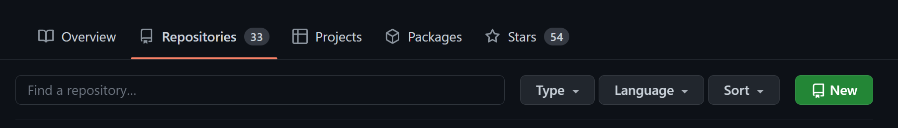

Achieving 100% reproducibility#
Here, we will explore various tools to execute your code on the cloud. This is an important step for your results to be 100% reproducible.
1 | Jupyter Notebook#
It is always essential to add an explanation to your code. Indeed, some code can be self-explanatory, but readers can quickly get the ideas through a spoken language than through code that is interpreted by machines.
Jupyter Notebook is a tool (a file format) that lets you write narratives together with code, in your preferred order. A Notebook file typically has .ipynb extension. We have already seen some on the Callysto Hub; in fact, the webpage you are watching right now is also converted from a Notebook. (We’ll show how to do this later during this semester.)
üõ†Ô∏è Markdown cells in Jupyter Notebook#
Initiate a new Jupyter Notebook. You can do this on a JupyterLab UI by using the blue “+” button at the upper left corner. Select the first cell and change its type to Markdown.
üö© Task: Copy the following text and paste it into a Markdown cell. Then execute the cell and see how different levels of heading and text styles are rendered by the Notebook.
# Title
## Abstract
This is a text.
## Introduction
My **Jupyter** introduction.
## Methods
### Method A
It takes *10 minutes*.
### Method B
It takes *30 minutes*.
üö© Task: Copy the following text and paste it into a Markdown cell. Then execute the cell and see how ordered or unordered lists are rendered by the Notebook.
#### Ordered list
1. Alpha
2. Beta
3. Gamma
#### Unordered list
- Apple
- Choose green
- Buy 2
- Banana
- Buy 5
- Carrot
üö© Task: The way to create a hyperlink is [Text to show](URL). Now, try to create a hyperlink that is identical to this one: RS6026: Open Science.
üö© Task: The way to show an image is . Now try to show CSRSR‚Äôs logo (available at https://www.csrsr.ncu.edu.tw/img/csrsr_logo.png) when you execute a text cell.
{kind=link}
❓ Question: Here’s the documentation for the Markdown in Jupyter Notebook. Can you show the following content in your Markdown cell?
Kepler’s third law of planetary motion can be expressed as:
\begin{equation} k = \frac{a^3}{T^2}, \end{equation}
where \(k\) is a constant, \(a\) is the object’s semi-major axis of its orbit, and \(T\) is the orbital period.
üõ†Ô∏è Code cells in Jupyter Notebook#
Check the upper right corner of your notebook. You should be able to see a text cell indicating your Notebook’s processing kernel. The word “kernel” in Jupyter Notebook refers to the environment that executes the code cell. For example, if it shows Python, a code cell will be interpreted and executed using Python.
üö© Task: Confirm that your Notebook has a Python kernel. Copy the following text and paste it into a Code cell. Then execute the cell and see how it is executed by Python.
numbers = []
for i in range(3):
num = float(input(f"Enter number {i+1}: "))
numbers.append(num)
total = sum(numbers)
average = total / len(numbers)
maximum = max(numbers)
print(f"Sum: {total}, Average: {average:.2f}, Max: {maximum}")
üö© Task: After you complete the task above, check the content of numbers by typing numbers in a new code cell.
üö© Task: A simple shell command can also be executed by adding a ! at the beginning of the line. Execute this and see what happens:
!ls -al
❓ Question: Suppose you have a long output from !ls -al and you want to hide it. How to do this?
2 | GitHub#
GitHub is an online hosting service for software, code, and documentation using Git as the tool of version control. Here we will create a code repository with some sample code scripts for your later use.
üõ†Ô∏è GitHub repository#
üö© Task: Register a GitHub account. üôÇ
üö© Task: Create a repository by the following steps:
On Github, go to “Your repositories” and you’ll see the page as below. Click the green button saying “New.” 
Follow the instructions. I recommend MIT as the license for this repository, but please feel free to choose whatever you like. You can also specify the license later. Any material without a given license is completely copyrighted.
If you are new to Git/GitHub, you can also skip the
Add .gitignoresection.After you create a new repository, you can try to add any content using the interface provided by GitHub (e.g., the “Add file” button).
üõ†Ô∏è Generate sample code scripts#
üö© Task: Create a new Notebook named scipy_test.ipynb with the following content:
#### This sample code was auto-generated using Bing's ChatGPT AI (GPT-4).
import numpy as np
from scipy import optimize
# Define the function that we want to fit
def test_func(x, a, b):
return a * np.sin(b * x)
# Generate some data with noise to fit
x_data = np.linspace(0, 4 * np.pi, 100)
y_data = 3.0 * np.sin(1.5 * x_data) + 0.5 * np.random.normal(size=100)
# Fit the data with the function
params, params_covariance = optimize.curve_fit(test_func, x_data, y_data, p0=[2, 2])
# Print the results
print(params)
I suppose you are creating this on Callysto. Next, try to execute this cell. Python will then try to load the numpy and scipy libraries, which are already installed on Callysto. You should see a successful result (coefficients of a linear regression) printed on the screen.
üö© Task: Create a new Notebook file named ipyleaflet.ipynb with the following content:
#### This sample code was modified from ipyleaflet's demo examples.
from ipyleaflet import Map, basemaps, basemap_to_tiles, Marker
center = (24.9677, 121.1870)
m = Map(
basemap=basemap_to_tiles(basemaps.OpenStreetMap.Mapnik),
center=center,
zoom=15
)
marker = Marker(location=center, draggable=False)
m.add_layer(marker);
m
If you are on Callysto and try to run this Notebook, you will see an error complaining No module named 'ipyleaflet' because the ipyleaflet package is not pre-installed on Callysto. We have to install it manually. You can use this command:
!pip install ipyleaflet
Once you have installed ipyleaflet, restart the kernel and refresh your Jupyter Notebook / JupyterLab page and re-execute the code cell again. Now it should nicely show a marker somewhere on a map…!
❓ Question: If you quit the Callysto Hub and restart it next time, you will have to reinstall ipyleaflet to successfully run the code. Why does the previous installation disappear?
üö© Task: Download scipy_test.ipynb and ipyleaflet.ipynb and upload them onto your new GitHub repository.
3 | Binder#

Binder is one of Jupyter’s projects that aims to set up an “easy place to share computing environments.” This project involves several software tools, such as BinderHub and repo2docker.
mybinder.org#
mybinder.org is an online realization of the Binder service. As long as a supported repository (e.g., GitHub) contains information for the computing environment, mybinder can initialize a server with the necessary packages installed. Finally, users can access the fully executable in-situ content through the Jupyter-based GUI without installing anything.
üõ†Ô∏è Binderize your repository#
üö© Task: To ‚Äúbinderize‚Äù a repository, we have to supply the information about the computing environment. Create a file called environment.yml with the following content:
name: binder-test
channels:
- conda-forge
dependencies:
- numpy
- scipy
- ipyleaflet
This file follows the YAML format and tells conda (one of the package managers Binder supports) what packages to install. Based on the code from scipy_test.ipynb and ipyleaflet.ipynb, we will need numpy, scipy, and ipyleaflet packages. Lastly, upload this file onto the same GitHub repository.
üö© Task: Confirm that your repository contains three files: scipy_test.ipynb, ipyleaflet.ipynb, and environment.yml, all with corresponding content.
üö© Task: After you confirm the repository content, go to mybinder.org and enter the repository URL to initialize the server with all the reproducible content from your repository:
Mybinder will take some time building a Docker image based on environment.yml. When it is finished, you should be able to see a JupyterLab (or Jupyter Notebook tree view) GUI with all the content of the repository. Navigate to scipy_test.ipynb and ipyleaflet.ipynb, run the cells, and see how they are conveniently showing results!
❓ Question: What does “Badges for your README” on the mybinder.org page do?
4 | More resources#
Git:
Python: there are tons of online resources, but here I can recommend some. (Disclaimer: I have no conflict of interest with any of the companies/organizations mentioned here.)
Learning Python with Jupyter book at https://learnpythonwithjupyter.com/ with downloadable Jupyter Notebook exercises.
Mybinder’s documentation contains information about BinderHub and the Docker technique for your reference.